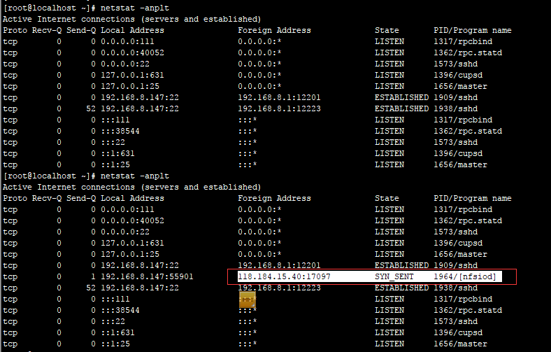
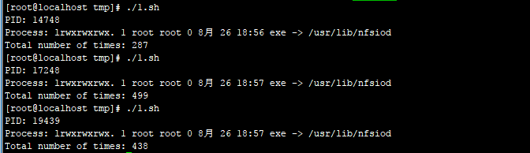

第2篇：捕捉短连接
0x00 前言
短连接（short connnection）是相对于长连接而言的概念，指的是在数据传送过程中，只在需要发送数据时，才去建立一个连接，数据发送完成后，则断开此连接，即每次连接只完成一项业务的发送。 在系统维护中，一般很难去察觉，需要借助网络安全设备或者抓包分析，才能够去发现。
0x01 应急场景
某天，网络管理员在出口WAF检测到某台服务器不断向香港I发起请求 ，感觉很奇怪，登录服务器排查，想要找到发起短连接的进程。
0x02 日志分析
登录服务器查看端口、进程，并未发现发现服务器异常，但是当多次刷新端口连接时，可以查看该连接。 有时候一直刷这条命令好十几次才会出现，像这种的短连接极难捕捉到对应的进程和源文件。

手动捕捉估计没戏，很难追踪，于是动手写了一段小脚本来捕捉短连接对应的pid和源文件。
脚本文件如下：
#!/bin/bash
ip=118.184.15.40
i=1
while :
do
tmp=netstat -anplt|grep $ip|awk -F '[/]' '{print $1}'|awk '{print $7}'
#echo $tmp
if test -z "$tmp"
then
((i=i+1))
else
for pid in $tmp; do
echo "PID: "${pid}
result=ls -lh /proc/$pid|grep exe
echo "Process: "${result}
kill -9 $pid
done
break
fi
done
echo "Total number of times: "${i}
运行结果如下：

跑了三次脚本，可以发现短连接每次发起的进程Pid一直在变，但已经捕捉到发起该异常连接的进程源文件为 /usr/lib/nfsiod
0x04 小结
本文简单介绍了短连接以及捕捉短连接源文件的技巧，站在安全管理员的角度，应加强对网络安全设备的管理，在网络层去发现更多在系统层很难察觉的安全威胁。